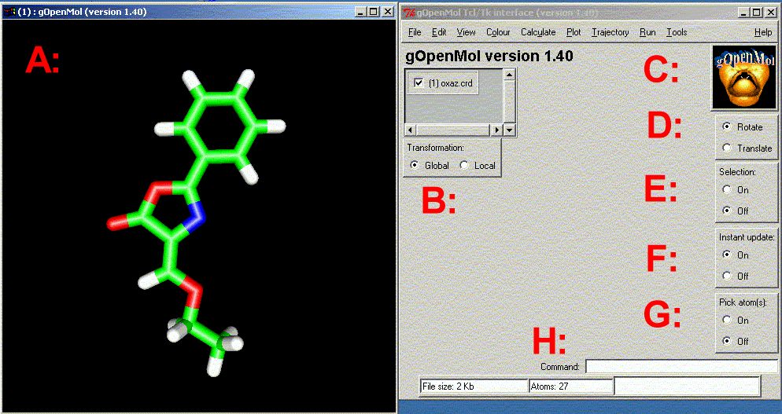

UNIX
We assume that gOpenMol is properly installed on your system and you know how to source the macro (setgopenmol) to set various aliases and environment values. In case you are using MESA and you are using a 8-bit display I recommend you to set the following environment variable:
setenv MESA_RGB_VISUAL "PseudoColor 8"
This variable tells MESA about your display type and assigns a proper visual to it. Write rungOpenMol (including path if you have not defined the symbol) and gOpenMol starts and if your display supports OpenGL or you are using MESA you get two new windows on your screen. The first window contains a pull down menu and some buttons to be used as the input window for gOpenMol. The other one is the graphics window where the molecular structures and other graphics objects are displayed.
Before we look at the GUI in more detail it is worth describing some of the things you don't see but yet they are still there:
Both startup files can contain internal gOpenMol tcl-commands.
WIN32
To start gOpenMol on the WIN32 platform run the rungOpenMol.bat file in the bin/ directory. This is easily done by making a shortcut from the file to your desktop.
Before we look at the GUI in more detail it is worth describing some of the things you don't see but still are there:
Start up windows:
The input window looks like (after reading in a structure):

gOpenMol starts with two windows (3D graphics window and GUI window). Window A contains the 3D graphics and the other windows contain the GUI with the various buttons. The various regions are defined as:
Please always remember to press the button
to (re)display the graphics!
The menu driven interface is implemented using the line commands. The pulldown menu options
generate a Tcl/Tk/gOpenMol command, which is sent to the gOpenMol parser. The flexible gOpenMol line command interface is
extremely powerful and useful.
gOpenMol is implemented using c-coding and Tcl/Tk and using OpenGL for the
graphics display and Tk for the GUI (Graphical User Interface).
The main idea of the command interface
The pulldown menues in the window (so far) are:
| File | Edit | View | Colour | Calculate | Plot | Trajectory | RUN | TOOLS | HELP |
(1) FILE menu has the options:
New, Starts a new gOpenMol session and destroy all internal
data structures and data.
Open, Open a previously written model (structure file gom file).
Close, Close the current session and destroy all internal data.
Save, Save the current structure and display in a model gom file.
Save as, Save the current structure and display in a new gom file.
Import, Import various things into gOpenMol.
* Cluster data
* Coordinates in various formats
* Dictionary file defining the mapping between atom label to atom type
* Gaussian basis set for OpenMol
* Atom vector data import vector data for display
* Read a Tcl script and execute it
* Import partial atomic charges from various program output files
* GAUSSIAN charges from (extracted from a Gaussian output file)
- Natural populationa
- Merz-Kollmann
- Chelpg
* ICON8 atom charges (extracted from an ICON8 output file)
* MOPAC
Export=, Export various things out from gOpenMol
* Cluster data
* Coordinates into some formats
* Correlation data
* Input=, Generate raw input to
* GAMESS program
* ICON8 program
* MOPAC program
* Probesurf program
* Own USER program
* Radial distribution function
* Root mean square deviation
* Save time series to disk
Reset=, Reset various things.
* Atom colour; Reset atom colours to default!
* gOpenMol; Reset gOpenMol and free all reserved memory!
* View; Reset view to the startup view!
Hardcopy; Produce a hardcopy or screen dump in some bitmap formats.
EXIT; Halt program execution.
(2) EDIT menu has the options:
Copy=, Copy various things to the clipboard paste buffer (works only on Windows).
* Bitmap; Copy current graphics window into clipboard
* Correlation; Copy correlation data into the clipboard
* MSD; Copy the Mean Square Displacement data into clipboard
* RDF; Copy the radial distribution function into clipboard
* Timeseries; Copy time series into clipboard.
Edit Cell, Edit the cell dimensions.
Center, Center system.
Identify Atom, Identify an atom by picking.
Light Properties, Edit light properties.
Material Properties, Edit surface material properties.
Merge structures, Merge all the current structures into one.
Molecule, Edit molecule (break and create bonds).
Rotate/Translate, Control widget for rotation and translation.
Select, Select atoms into the selction buffer.
Display properties, Change display properties.
Display list props, Change display list properties.
3D to 2D, Make a 3D to 2D transformation of your system.
(3) VIEW menu has the options:
Atom colour, Change atom colour.
Atom labels, Display atom labels.
Atom tree, Display atom data as a tree.
Atom mask, Change atom display mask.
Atom type, Change atom type display.
Background colour=, Change background colour in graphics window.
* Background, Change background colour with a Tcl/Tk tool.
* Background, Change background colour with a RGB tool.
Measure, Measure molecular geometry.
Periodic table, Show the periodic table
Stereo=, Stereo display
* Stereo pairs
Text output, Display gOpenMol output text.
(4) CALCULATE menu has the options:
Average structure Calculate average structure from a set of trajectory frames.
Cluster, Calculate and plot cluster matrix from a
Trajectory file.
Connectivity, Calculate atom connectivity.
Hydrogen bonds, Calculate and display hydrogen bonds.
Correlation, Calculate correlation series from time series.
Geometry, Calculate molecular geometry.
Mean sgr displ, Calculate mean square displacement values from
a trajectory file.
RDF, Calculate a single or an average radial
Distribution function from a frame or trajectory.
Superimpose, Superimpose two structures.
Surface centroid, Calculate the centroid for an isosurface.
(5) PLOT menu has the options:
Axis, Plot coordinate axis.
Clip plane, Plot contour using a clip plane.
Colour scale, Plot a colour scale.
Contour, Display contour surfaceses.
Cutplane, Plot a cutplane trough a contour surface.
LDP, Plot a linear distance plot for selected atoms.
Plumber, Plot a tube or ribbon trough selected atoms.
RMSD, Plot root mean square deviation of atom movement.
Vector file, Plot vectors using data from a file.
(6) TRAJECTORY menu has the options:
Fill=, Fill time series vectors.
* Distance array
* Angle array
* Torsion array
Delete=, Delete time series vectors.
* Distance array
* Angle array
* Torsion array
Main, Main trajectory control widget.
Monitor=, Monitor molecular geometry.
* Distance(s)
* Angle(s)
* Torsion(s)
Time series, Manipulate time series widget.
Trace, Trace the movement of selected atoms.
Make video, Make animations.
(7) RUN menu has the options:
AutoDock2plt, Run AutoDock2plt to convert a map grid file
into a format known by gOpenMol.
ContMan, Run ContMan to manipulate plt files.
Gamess2plt Run the filter program to convert (PC)GAMESS output
grid data into a format known by gOpenMol.
gCube2plt/g94cub2pl, Run the gCube2plt or g94cub2pl to convert a GaussianXX
cube file into a format known by gOpenMol.
Jaguar2plt Run the filter program to convert Jaguar output
grid data into a form known by gOpenMol.
Join Gamess IRC files Run script to join Gamess IRC files.
Kont2plt, Run Kont2plt to convert a Grid grid file
into a format known by gOpenMol.
Pltfile, Run the Pltfile program to convert the gOpenMol
plot file between binary and formatted.
Probesurf, Run the Probesurf program to generate a Connolly
type of surface.
TMole2plt, Run the TMole2plt program to convert a TurboMole
grid file into a format known by gOpenMol.
UHBD2plt, Run the UHBD2plt program to convert a phi grid file
into a format known by gOpenMol.
Xvibs Run the Xvibs program to prepare animations from
a GaussianXX vibration calcalation.
(8) TOOLS menu has the options:
DLL/SO plugins Available gOpenMol plugins
AutoDock, AutoDock display facility.
(9) HELP menu has the options:
About, Show the about text about gOpenMol.
Demo, Demo widget.
Help, Show this file.
Menu help, Show the pulldown menu help.
Peek version, Use the http protocol to get info about
the latest available gOpenMol version and platforms.
Tutorials, Show the available tutorials. Please observe
that the internal browser may not show the pages properly so
you should use a proper Web browser for the best result.